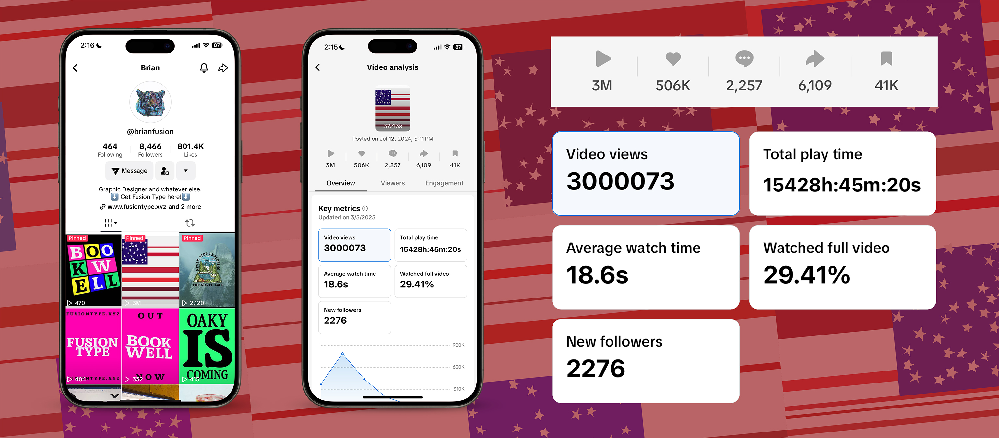

Click “Generate New Flag” to generate a new flag! This works using Java Script to generate unique flags every time. Yes, every single time you click the button, an image that never existed before (or ever again) sketches itself in the browser. It is like a snowflake. Full disclaimer, this tool was made to help generate these flags so some of them might not hit all of the requirements.
The Second Continental Congress established that the U.S. flag should have 13 alternating red and white stripes with 13 union stars in a blue field on June 24, 1777. Later on, the Flag Act of 1818 was enacted. This stated that there be 13 alternating red and white stripes with 20 white union stars on a blue field. In addition, each new state shall update the flag with one new start (and this update is official on the next Fourth of July). This project was based on these old and outdated American Flag Code.
Imagine the United States of America developed differently in the 200+ years since the Flag Act of 1818. What if I could code a way to create almost every possible flag design based on this outdated act. Every American is different. Everyone holds different beliefs and come from different stories. “Despite Everything, It’s Still You” is the title of this project. It is important to remember that everyone is different, but we all share one thing, we are American. This code I wrote exploits the Flag Act of 1818 to create “valid” U.S. flags to represent everyone. Upon completing this project, I put it in a short video and decided to upload it to the internet. It gained a lot of traction on TikTok particularly with 3,000,000+ views and 500,000+ likes.
